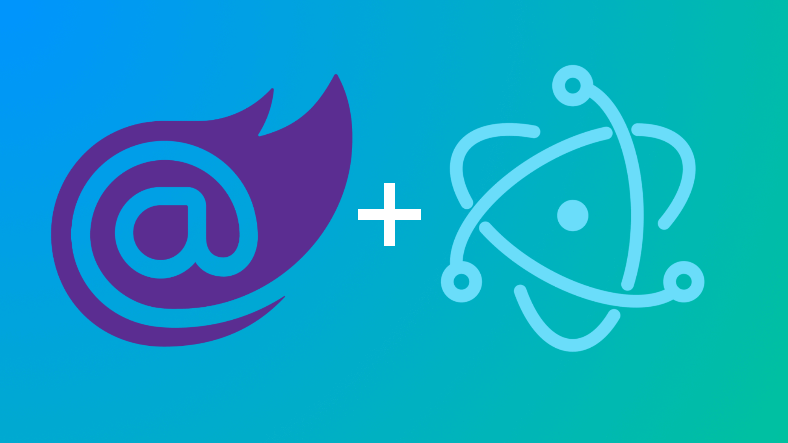

Building Desktop Apps with Blazor
Jim Buck
November 20, 2019
Agenda
Blazor
Demo
Electron
Demo
Desktop Blazor
Demo
Intro to Blazor

What is Blazor?
Component-based UI framework
Reactive programming model
100% C# and Razor
Optional JS-interop API
Flavors of Blazor
Blazor WebAssembly
Blazor Server
Hybrid
Native
Blazor WebAssmebly
Client downloads runtime and DLLs.
Powered by Mono (
wasmandmono)Supports PWA's
Releasing with ASP.NET Core 3.1
Blazor Server
All domain logic is on server
Prerender page on request
Input sent to server via SignalR
DOM diff sent back to client
Blazor Hybrid
Server when connected
WebAssembly when disconnected
Not officially announced, but "planned"
Blazor Native
Non-HTML rendering (native controls)
Totally unofficial, pipe dream
Use Cases
Traditional .NET development team
Migrating from WebForms or MVC
Full-stack, single vendor
Building with Blazor
Setup
.NET Core SDK 3.0
Visual Studio 2019 or VS Code
dotnet new blazorserver
Pages
@page "/"
@using BlazorDemo.Data
@inject UserData userData
<div class="row">
<h1>Intro</h1>
</div>
<div class="row">
<NavLink href="/upload" Match="NavLinkMatch.Prefix">Begin</NavLink>
</div>
@code {
protected override void OnInitialized()
{
userData.Reset();
}
}
Components
@using BlazorDemo.Models
<div class="photo-stack">
@foreach (var photo in Photos) {
<img src="@photo.Path" class="rand@(rand.Next(0, 5))" />
}
</div>
@code {
private Random rand = new Random();
[Parameter]
public List<Photo> Photos { get; set; }
}
Services
Regular classes
Dependency Injection
Scopedfor Connection Lifetime
Re-usable across projects
Debugging
Breakpoints in
.cshtml/.razorKinda slow
dotnet watch runImprovements are planned
Blazor Demo
Intro to Electron
What is Electron?
Platform for desktop apps using web tech
Node.js + Chrome = Electron
Un-sandboxed environment
Cross-platform, accessible, extensible
Main Process
Entry point
Primary process
Node.js file
Renderer Process
Per window
Uses IPC to communicate with Main
Full access to Node.js runtime
Use Cases
Fast iteration time for web developers
Reuse code across websites and desktop
True cross-platform UI and logic
Built with Electron
VS Code, Slack, Microsoft Teams,
Postman, and MANY more!
Building With Electron
Main Process
const {app, BrowserWindow} = require('electron');
let win;
app.on('ready', () => {
win = new BrowserWindow({ width: 800, height: 600 });
win.loadFile('index.html');
});
Renderer Process
Regular HTML file
JS is Node.js (
require/import)Security can be reduced/disabled
Packaging
Executable or installer
Mac required to build for OSX, Windows and Linux aren't limited.
Auto-update
Electron Demo
Desktop with Blazor

Setup
Install
ElectronNET.API/ElectronNET.CLIInitialize the project using
ElectronNET.CLIUpdate 2 files (Program.cs and Startup.cs)
dotnet add package ElectronNET.API
dotnet new tool-manifest
dotnet tool install ElectronNET.CLI
dotnet electronize init
Usage
Add ElectronNET specifics to Startup.cs
dotnet electronize startOpen DevTools
Publishing
dotnet electronize build /target win
# OR
dotnet electronize build /target osx
# OR
dotnet electronize build /target linux
Unpacked binaries
Installer
Desktop Blazor Demo
Questions?
Thanks!
(Slides/Repo will be available later this week)
@jimbuckio